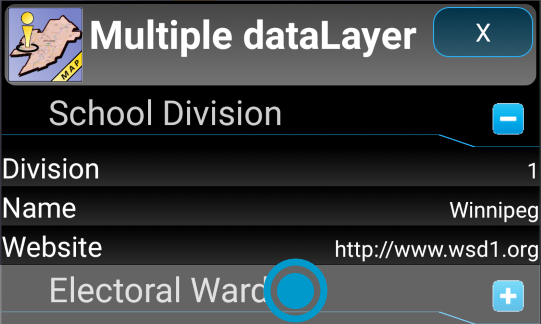
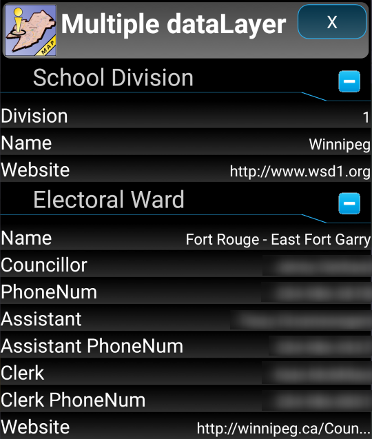

Multiple data layer:
This type info window contains data for multiple features. It is usually the result of tapping an area when multiple boundaries were selected. For example: having both "city limit" and "electoral wards" selected. Tap the feature title to view its corresponding data.
Tap feature title.

View feature data.
